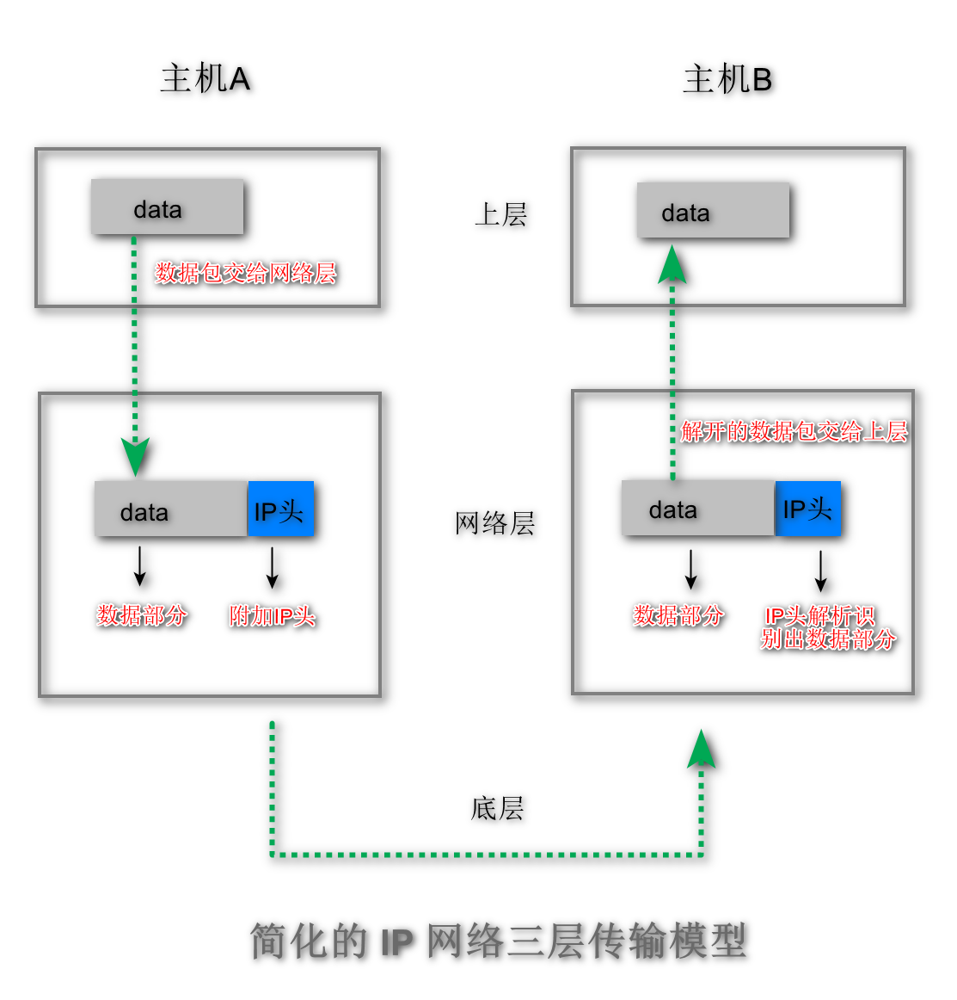
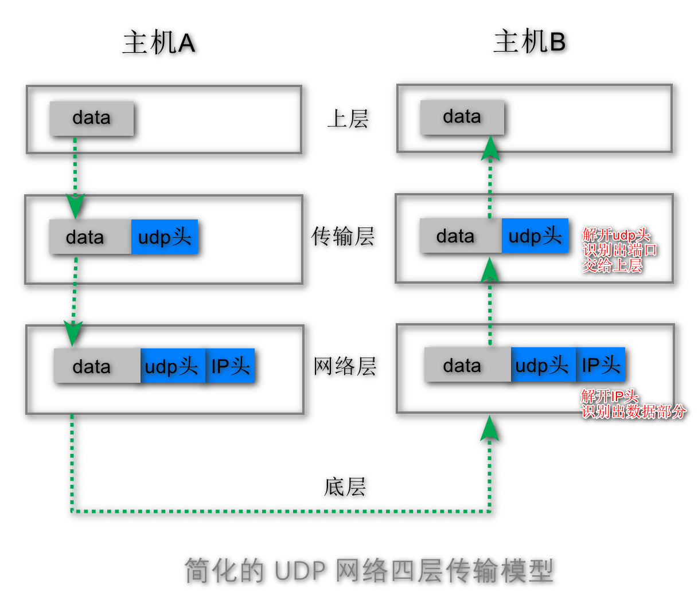
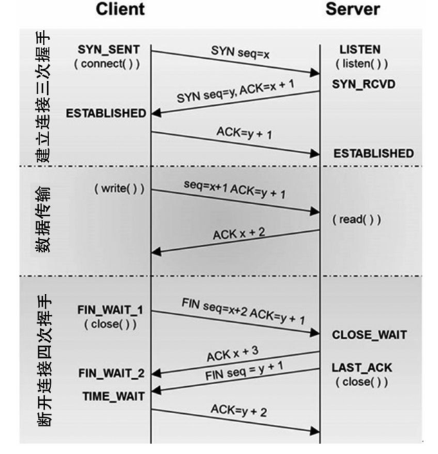

1. 网络连接
| OSI七层模型 | TCP/IP四层协议族 | 对应网络协议 |
|---|---|---|
| 应用层（Application） | 应用层 | HTTP、TFTP, FTP, NFS, WAIS、SMTP |
| 表示层（Presentation） | Telnet, Rlogin, SNMP, Gopher | |
| 会话层（Session） | SMTP, DNS | |
| 传输层（Transport） | 传输层 | TCP, UDP |
| 网络层（Network） | 网络层 | IP, ICMP, ARP, RARP, AKP, UUCP |
| 数据链路层（Data Link） | 数据链路层 | FDDI, Ethernet, Arpanet, PDN, SLIP, PPP |
| 物理层（Physical） | IEEE 802.1A, IEEE 802.2到IEEE 802.11 |
OSI 模型，全称为 Open System Interconnection，即开放系统互联模型，这个是由 ISO(International Organization for Standardization) 国际标准化组织提出的。
它主要是用来解决当时各个网络技术供应商在协议上无法统一的问题，通过将整个网络体系结构抽象为 7层，从最底层的物理层、数据链路层一直到最上面的应用层都做了定义。TCP/IP，即 TCP/IP Protocol Suite(协议套件)是一个以TCP协议和IP协议为核心的通信模型，该模型采用协议堆栈的方式来实现许多通信协议，并将通讯体系抽象为4层。
TCP/IP 模型最早发源于美国国防部（缩写为DoD）的ARPA网项目，此后就交由IETF组织来维护。
2. 网络层：简化的IP网络三层传输
2.1 IP头信息
IP 头是 IP 数据包开头的信息，包含 IP 版本、源 IP 地址、目标 IP 地址、生存时间等信息
2.2 IP层数据传输步骤
- 上层将含有“data”的数据包交给网络层；
- 网络层再将 IP 头附加到数据包上，组成新的 IP 数据包，并交给底层；
- 底层通过物理网络将数据包传输给主机 B；
- 数据包被传输到主机 B 的网络层，在这里主机 B 拆开数据包的 IP 头信息，并将拆开来的数据部分交给上层；最终，含有“data”信息的数据包就到达了主机 B 的上层了。
3. 传输层：简化的UDP四层网络连接
3.1 UDP作用
IP 通过 IP 地址信息把数据包发送给指定的电脑，而 UDP 通过端口号把数据包分发给正确的程序
3.2 UDP头信息
端口号会被装进 UDP 头里面，UDP 头再和原始数据包合并组成新的 UDP 数据包。UDP 头中除了目的端口，还有源端口号等信息
3.3 UDP层传输步骤
- 上层将含有“data”的数据包交给传输层；
- 传输层会在数据包前面附加上 UDP 头，组成新的 UDP 数据包，再将新的 UDP 数据包交给网络层；
- 网络层再将 IP 头附加到数据包上，组成新的 IP 数据包，并交给底层；
- 数据包被传输到主机 B 的网络层，在这里主机 B 拆开 IP 头信息，并将拆开来的数据部分交给传输层；
- 在传输层，数据包中的 UDP 头会被拆开，并根据 UDP 中所提供的端口号，把数据部分交给上层的应用程序；最终，含有“data”信息的数据包就旅行到了主机 B 上层应用程序这
3.4 UDP数据传输的特点
在使用 UDP 发送数据时，有各种因素会导致数据包出错，虽然 UDP 可以校验数据是否正确，但是对于错误的数据包，UDP 并不提供重发机制，只是丢弃当前的包，而且 UDP 在发送之后也无法知道是否能达到目的地
3.5 UDP的应用
UDP 不能保证数据可靠性，但是传输速度却非常快，所以 UDP 会应用在一些关注速度、但不那么严格要求数据完整性的领域，如在线视频、互动游戏等
4. 传输层：简化的TCP四层网络连接
4.1 TCP头信息
TCP 头除了包含了目标端口和本机端口号外，还提供了用于排序的序列号，以便接收端通过序号来重排数据包
4.2 TCP连接的生命周期
建立建立阶段（三次握手）
客户端向服务器端发送建立连接请求，服务器端做出应答，客户端告知服务器端收到应答
目的：对于客户端和服务器端发出的消息都能收到回复，才是可靠的数据传输阶段
对于单个数据包：接收端需要对每个数据包进行确认操作。
也就是接收端在接收到数据包之后，需要发送确认数据包给发送端。
所以当发送端发送了一个数据包之后，在规定时间内没有接收到接收端反馈的确认消息，
则判断为数据包丢失，并触发发送端的重发机制
对于大文件：一个大的文件在传输过程中会被拆分成很多小的数据包，这些数据包到达接收端后，
接收端会按照 TCP 头中的序号为其排序，从而保证组成完整的数据断开连接阶段（四次挥手）
可由客户端或者服务器端任何一端发起断开请求
客户端和服务器端都需要是断开就绪状态，才能真正断开。
如：客户端发起断开请求，服务器端确认，返回断开确认信息，客户端处于断开就绪状态。当服务器端处 理完毕，向客户端发送断开请求，客户端返回信息可以断开，服务器端就处于
断开就绪状态，此时客户端和服务器端都是断开就绪状态，则连接断开

代码解释
SYN表示建立连接
FIN表示关闭连接
ACK表示响应
PSH表示有 DATA数据传输
RST表示连接重置
wireshark 过滤语句：ip.addr == 127.0.0.1 && ip.dst == 127.0.0.1 && tcp.port == 53100
4.3 TCP数据传输的特点
TCP（Transmission Control Protocol，传输控制协议）是一种面向连接的、可靠的、基于字节流的传输层通信协议
- 对于数据包丢失的情况，TCP 提供重传机制；
- TCP 引入了数据包排序机制，用来保证把乱序的数据包组合成一个完整的文件。